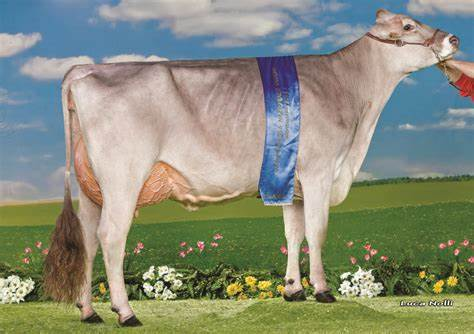
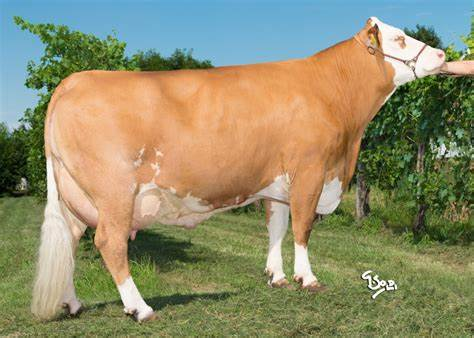

LE MUCCHE DA LATTE
frisona
La Frisona è una razza bovina originaria dell'Olanda, conosciuta anche con il nome di Holstein. È una razza molto diffusa in tutto il mondo, grazie alla sua produttività e alla sua adattabilità a diverse condizioni climatiche e ambientali. Le mucche Frisone possono produrre grandi quantità di latte, fino a 12.000 litri all'anno, il che le rende una delle razze più produttive al mondo. Tuttavia, a causa di questa elevata produttività, le mucche Frisone sono spesso soggette a problemi di salute legati alla produzione di latte e richiedono quindi cure e attenzioni speciali. La razza Frisona ha una conformazione fisica imponente, con un'altezza al garrese che può superare il metro e mezzo e un peso che varia dai 500 ai 700 kg. Il loro mantello, caratterizzato dalla tipica colorazione bianca e nera, è molto resistente e adatto alle diverse condizioni climatiche. Le mucche Frisone sono utilizzate principalmente per la produzione di latte, ma anche per la produzione di carne. La razza è inoltre utilizzata per la riproduzione di bovini di razza mista e per la produzione di formaggi come il Gouda.

bruna
La bruna mucca è una razza di mucche da latte originaria del nord dell'Italia e della Svizzera. Sono note per la loro capacità di produrre latte di alta qualità con un alto contenuto di grassi e proteine. Sono animali robusti e resistenti alle diverse condizioni climatiche. Sono comunemente allevati in aziende agricole di piccole dimensioni, dove vengono mantenuti in stalla durante l'inverno e fatti pascolare all'aperto durante l'estate. Essendo una razza di taglia media, le brune mucche possono pesare attorno ai 600-700 kg e raggiungere un'altezza al garrese di circa 140-150 cm. Sono note anche per la loro attitudine alla riproduzione, che le rende ideali per la produzione di bovini da carne. Alcune delle razze di mucche brune più conosciute a livello internazionale includono la bruna alpina, la bruna svizzera e la bruna appenninica
pezzata rossa
La pezzata rossa è una razza bovina originaria dell'Italia; è una razza a duplice attitudine (latte e carne);è molto diffusa in Italia, soprattutto nel Centro e nel Sud;il mantello è rosso variegato con macchie bianche;la taglia è media, con un peso adulto compreso tra i 500 e i 600 kg;la produzione lattea è di circa 4.000 kg all'anno, con un contenuto medio di grasso del latte pari al 3,5%;è una razza molto rustica e resistente, adatta all'allevamento all'aperto;la pezzata rossa è stata utilizzata per creare alcune razze ibride, come la pezzata nera e la pezzata della valle del Po.
